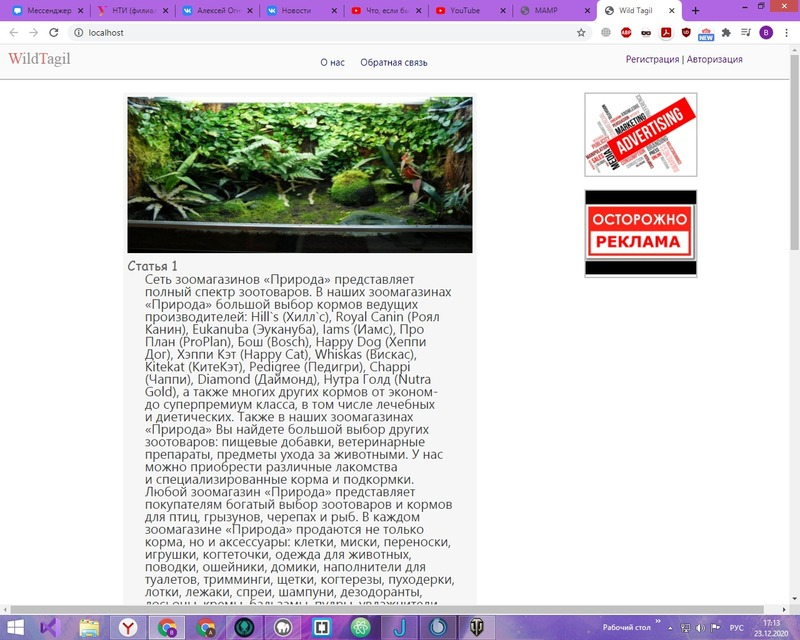
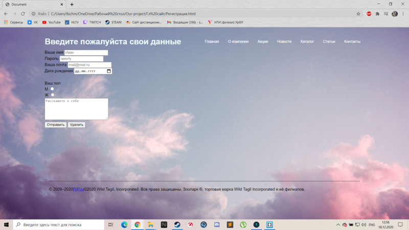

Краткая информация
Перед нами стояла задача создать сайт, на котором пользователь мог бы зарегистрироваться, просмотреть каталог доступной продукции и сделать заказ. Также на сайте должен присутствовать раздел со статьями, которые так или иначе могут быть полезны пользователю.
Копию данного ПО можно получить на странице нашего проекта в GitHab. Подробную информацию о развертывании ПО в условиях эксплуатации можно посмотреть в разделе "Развертывание".
Предварительные условия
Для использования нашего сайте вам понадобиться PC с установленной операционной системой, а также браузер с выходом в сеть интернет.


Инструкция по запуску
Для того,чтобы запустить сайт удаленно, следует перейти по ссылке "----".
Если же вы хотите запустить сайт со своего PC, Вам следует открыть корневую папку сайта и запустить файл "index.html"
Инструкция по редактированию
Перед началом Вам следует получить разрешение на редактирование у одного из разработчиков сайта. Данные для связи Вы можете найти на самом сайте в разделе "Контакты"
Для непосредственного редактирования необходимо:
Примеры использования программы
Регистрация на сайте
Просмотр страницы с акциями